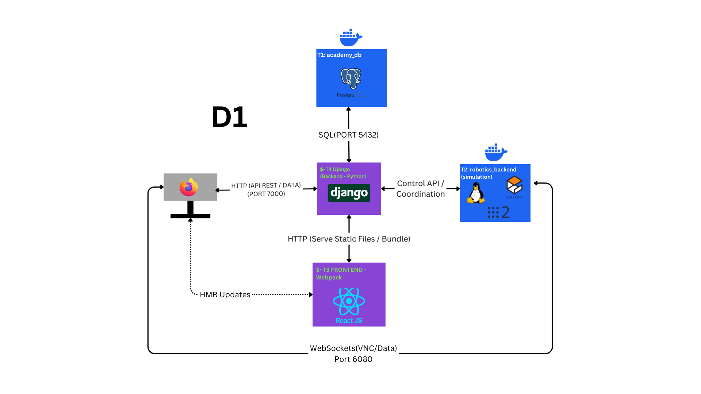

Logbook de Prácticas
Seguimiento semanal de retos y desarrollo en la asociación JdeRobot.
Navegación rápida
00
DD Mes - DD Mes, YYYY
Plantilla: Guía de Componentes Modulares
▼
Plantilla: Guía de Componentes Modulares
Para resaltar texto importante usa la etiqueta b de negrita. Para términos técnicos o énfasis sutil, usa la etiqueta i de cursiva, que aparecerá en el amarillo de la asociación.
Puedes insertar listas de objetivos:
- Primer hito alcanzado.
- Depuración del nodo de control.
Las imágenes llevan un borde sutil y pie de foto centrado.
Para fragmentos de código, usa el bloque code-block:
# Comando de ejemplo
python3 -m venv venv
01
17 02 - 20 02, 2026
Blog + Despliegue local (D1) Unibotics
▼
Blog + Despliegue local (D1) Unibotics
Esta semana he configurado este logbook y completado el despliegue local D1 de Unibotics. Durante el proceso, he analizado la arquitectura de la aplicación, que se asienta sobre tres capas principales: una base de datos persistente, un backend robusto en Django y un frontend reactivo.
La instalación ha seguido un orden lógico para levantar este ecosistema:
- Entorno de ejecución: Configuración de un entorno virtual aislado con Python 3.8 para gestionar las dependencias del servidor Django.
- Repositorio y submódulos: Clonado recursivo del servidor incluyendo submódulos críticos como Robotics Academy (RA) y Robotics Infrastructure (RI), que alojan los ejercicios.
- Base de Datos con Docker: Despliegue mediante un contenedor PostgreSQL 13.11 que escucha en el puerto 5432. He configurado la conexión mediante un archivo
.envpara sincronizar el backend con la base de datos. - Población de la BD: Tras levantar el contenedor, he tenido que completar las tablas manualmente aplicando los dumps de SQL de RI y RA. Posteriormente, ejecuté las migraciones de Django e inyecté los usuarios de prueba.
- Frontend: Uso de Node.js 17 y Webpack para compilar y servir los archivos estáticos de la interfaz en React.
En cuanto al Robotics Backend, al ser una herramienta que ya conocía, el proceso consistió en descargar su imagen de Docker y lanzarla habilitando el soporte para GPU (gráfica) mediante nvidia-smi para asegurar la fluidez de los simuladores.

Arquitectura D1: El Backend Django (7000) actúa como puente entre la BD PostgreSQL (5432) y el Robotics Backend (6080).
Comandos útiles para lanzar la aplicación en terminales independientes:
# Terminal 1: Iniciar la Base de Datos (PostgreSQL)
docker start academy_db
# Terminal 2: Servidor Django (Backend)
# (Activar entorno virtual academy-venv)
cd unibotics-webserver/unibotics/
python manage.py runserver 7000
# Terminal 3: Webpack (Frontend React)
cd unibotics-webserver/unibotics/react_frontend
npm run dev
# Terminal 4: Robotics Backend (Lanzamiento con GPU)
docker run --rm -it $(nvidia-smi >/dev/null 2>&1 && echo "--gpus all" || echo "") --device /dev/dri -p 6080-6090:6080-6090 -p 7163:7163 jderobot/robotics-backend:latest